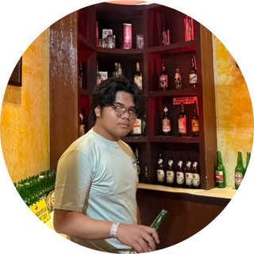

Biodata
| NIM | : 2025081037 |
|---|---|
| Nama | : Samuel Sheva Sabbathino Liklikwatil |
| Agama | : Kristen |
| Tanggal Lahir | : 26 Januari 2007 |
| Tempat Lahir | : Jakarta |

Nama: Samuel Sheva Sabbathino Liklikwatil
| NIM | : 2025081037 |
|---|---|
| Nama | : Samuel Sheva Sabbathino Liklikwatil |
| Agama | : Kristen |
| Tanggal Lahir | : 26 Januari 2007 |
| Tempat Lahir | : Jakarta |